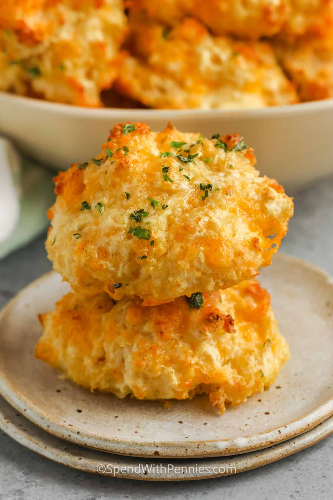

Hello World
Hello may names Jesus and im a second year AGPM major. I love games of all types/medias that includes sports, video games, and board games. In the past year I have gotten into soccer and ever since I have played at least 2-3 times a week. besides that Im a social person who likes doing things with freinds. my partner is Salem, they love all things digital art, media, and illustration. They most of my time drawing and listening to music and occasionally playing a game or two.
ChatGPT Reviews
Ah, the Butter Bay Biscuits of Red Lobster, those delectable nuggets of joy that ignite the senses and transport the soul to realms of pure culinary ecstasy. With their golden exterior, delicately crumbly texture, and tantalizing blend of buttery richness and savory herbs, these biscuits are not just a treat for the taste buds, but a transcendental experience that whispers of seaside retreats and sun-kissed indulgence. Each bite is a symphony of flavor that captivates the senses and leaves one yearning for just one more heavenly morsel. Indeed, the Butter Bay Biscuits are more than a mere culinary creation; they are a testament to the boundless creativity and passion of those who crafted them, a love letter to the palate that speaks of the endless possibilities of gastronomic delight.